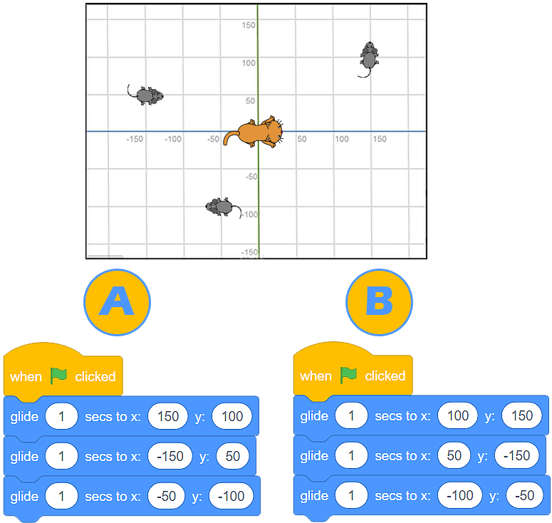
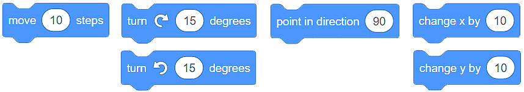
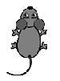
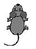
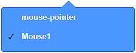
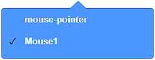

Kretanje (Motion)¶
Već ste upoznali Scratch korisničko sučelje, naučili ste kako stvarati likove i odrediti njihov položaj na pozornici. Sad je savršeno vrijeme da naučite kako ih pomicati pomoću naredbi (blokova) iz kategorije Kretanje (Motion). Ovi će vam blokovi omogućiti jednostavne igre i animacije.
Postoje 3 vrste blokova pomoću kojih možete pomicati svoj lik:
Blokovi za apsolutno kretanje
Blokovi za relativno kretanje
Ostali blokovi pokreta
Blokovi za apsolutno kretanje¶
U kategoriji Kretanje (Motion), postoji 4 bloka koji omogućuju apsolutno kretanje.

Te ćete blokove koristiti kad trebate programirati svoj lik za pomicanje na određeno mjesto (točku) na pozornici.
Mačka lovi miša…
Mačka se nalazi u središtu pozornice, a miš je u točki (x:150 y:100).

Podsjećamo da je pozornica pravokutna površina širine 480 piksela i visine 360 piksela. Središte ima koordinate (x:0 y:0).
Ako želite da mačka uhvati miša, jednostavno možete koristiti blok  .
.
{kind=link}
Ako želite da potjera dulje traje, možete koristiti blok  . S ovim blokom mačka će kliziti 1 sekundu od točke (x:0 y:0) do točke (x:150 y:100).
. S ovim blokom mačka će kliziti 1 sekundu od točke (x:0 y:0) do točke (x:150 y:100).
Korištenjem blokova  i
i  možete napraviti da se čini kao da se mačka lagano prikrada mišu:
možete napraviti da se čini kao da se mačka lagano prikrada mišu:

Uvijek možete vidjeti trenutni položaj lika (trenutne vrijednosti x: i y:) ispod pozornice, na popisu likova.

- Program A
- Odgovor je točan! Mačka je "uhvatila" sve miševe!
- Program B
- Hm.. Preporučujemo da pažljivo pročitate lekciju Položaj lika na pozornici.
Q-5: Analizirajte položaj miševa prikazan na donjoj slici i odaberite program koji će omogućiti mački da “uhvati” sve miševe.
{kind=link}
 Dakle, koristeći blokove za apsolutno kretanje, recite svom liku točno gdje treba ići na pozornicu.
Dakle, koristeći blokove za apsolutno kretanje, recite svom liku točno gdje treba ići na pozornicu.
Blokovi za relativno kretanje¶
Relativno kretanje nije određeno lokacijom lika, već trenutnim položajem lika.
U kategoriji Kretanje (Motion), imate na raspolaganju nekoliko blokova koji omogućuju relativno kretanje.
Na primjeru gdje je mačka lovila miša, znali smo točno mjesto miša (točku u kojoj se nalazi). Situacije u kojima ne znamo lokaciju lika češća su pojava. U tim ćemo slučajevima koristitimo blokove za relativno kretanje za pomicanje naših likova.
Kada je u pitanju relativno kretanje, vrlo je važno usmjeriti (okrenuti) lik u željenom smjeru. To postižemo povlačenjem strelice oko kruga bloka  .
.
Dobro je znati da smjer prema 0 predstavlja prema gore, prema 90 je desno, prema 180 je dolje, a prema -90 je lijevo.

Uvijek možete vidjeti trenutni smjer lika ispod pozornice, na popisu likova u polju Smjer (Direction).
- Smjer: 90 (desno) Pozicija: (x: 50 y: -100)
- Ponovno analizirajte program. Mijenja li okretanje lika za 90 stupnjeva?
- Smjer: 180 (down) Pozicija: (x:50 y:100)
- Odgovor je točan! Dobro razumijete pokret lika!
Q-6: Analizirajte program predstavljen na slici i odaberite što mislite o smjeru lika, kao i kakav će biti njegov položaj nakon završetka programa.

Dakle, pomoću blokova za relativno kretanje, kažete liku gdje se treba usmjeriti i pomicati u odnosu na njegov trenutni položaj.
Ostali blokovi kretanja¶
U kategoriji Kretanje (Motion), imate na raspolaganju još 4 bloka koji omogućuju pomicanje lika.

Pozornica je ograničen prostor. Kad lik dođe do ruba pozornice, bilo bi prirodno da se okrene i nastavi kretati u drugom smjeru. To ponašanje lika ćete omogućiti pomoću bloka  . Također ćete odlučiti kako se lik nastavlja kretati. Ako unutar bloka
. Također ćete odlučiti kako se lik nastavlja kretati. Ako unutar bloka  postavite stil rotacije lika all around, i dalje će se kretati naglavačke. To se neće dogoditi ako s padajućeg popisa bloka odaberete opciju
postavite stil rotacije lika all around, i dalje će se kretati naglavačke. To se neće dogoditi ako s padajućeg popisa bloka odaberete opciju  .
.

Uvijek možete vidjeti trenutni stil vašeg kretanja lika ispod pozornice na popisu likova, u polju Smjer (Direction).
Vratimo se našim likovima:  i .
i .
Ako ne znamo točan položaj miša i želimo da mačka usmjeri prema njemu (okrenemo se prema njemu), možemo koristiti blok  . Trebamo samo izabrati lik miša  s padajućeg popisa i problem je riješen.
. Trebamo samo izabrati lik miša  s padajućeg popisa i problem je riješen.
Pokazati ćemo vam kako djeluju posljednja dva bloka u sljedećem primjeru.
Mačka lovi miša…
Mačka lovi miša i klizi prema njemu. Miš se neprestano okreće i kreće prema pokazivaču, kojim se krećemo po pozornici.

Iznad svakog lika nalazi se skripta koja omogućuje opisano ponašanje.
 Nadogradite gore predstavljeni program dodavanjem još jednog lika - jabuke. Neka miš lovi jabuku, a mačka lovi miša. Neka se jabuka pomakne prema pokazivaču (koji kontroliramo), miš se treba kretati prema jabuci, a mačka prema mišu.
Nadogradite gore predstavljeni program dodavanjem još jednog lika - jabuke. Neka miš lovi jabuku, a mačka lovi miša. Neka se jabuka pomakne prema pokazivaču (koji kontroliramo), miš se treba kretati prema jabuci, a mačka prema mišu.

Moguće rješenje: